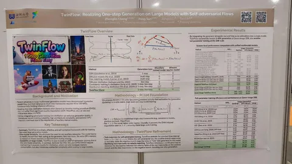

Авторы презентуют метод пошаговой дистилляции диффузионных моделей, который работает без вспомогательных моделей, в отличие от общепринятых техник вроде consistency models, ADD и DMD2.
Конкретно предлагают отразить временную ось относительно нуля — в результате диффузионный процесс происходит на интервале [-1, 1]. Причём участку [-1, 0] соответствует путь из шума в данные, сгенерированные самой моделью — «фейковые данные».
Задача модели в процессе оптимизации — минимизировать разницу между скоростями для «фейковых» (при отрицательных временах) и реальных (при положительных временах) данных. В точке оптимума обе скорости совпадают.
Итоговый лосс — сумма функции потерь из RCGM (некоторого обобщения MeanFlow для многошаговой генерации) и матчинга распределений для «фейковых» и реальных данных.
Полученный метод достигает хорошего качества почти без просадки по сравнению с базовой Qwen-Image и на одном уровне с Qwen-Image-Lightning. При этом сам фреймворк проще, и ожидается, что он меньше просаживает разнообразие.
Интересное заметил
#YaICLR26
CV Time
